Letter
Churchill’s signed note to Colonel Fairfax
“Chartwell, Westerham, Kent. 6 December, 1946. Dear Colonel Fairfax…” The note thanks Fairfax for a “kind letter” and anchors the documented Churchill–Fairfax exchange.
A close-reading gallery for the Churchill letter, first-edition indicators, Fairfax identity evidence, memorial photography, and the newly generated NLS source-map crops.
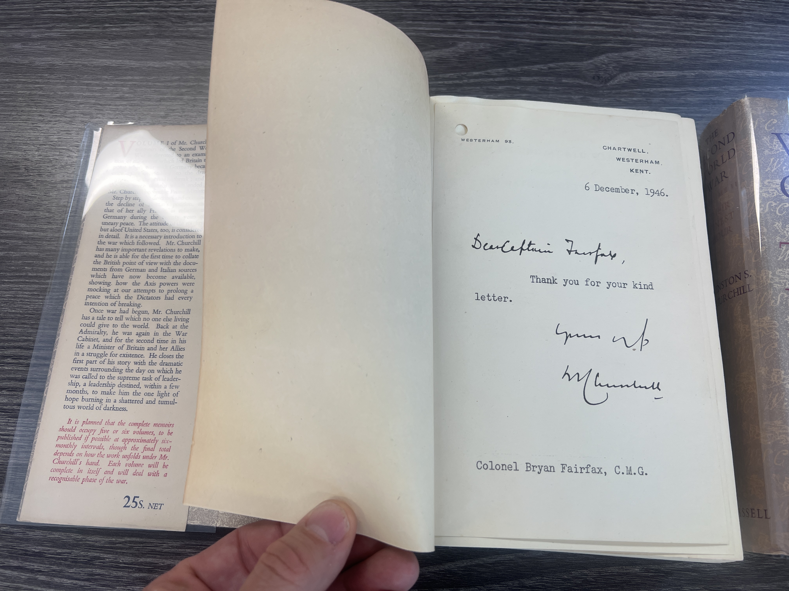
“Chartwell, Westerham, Kent. 6 December, 1946. Dear Colonel Fairfax…” The note thanks Fairfax for a “kind letter” and anchors the documented Churchill–Fairfax exchange.
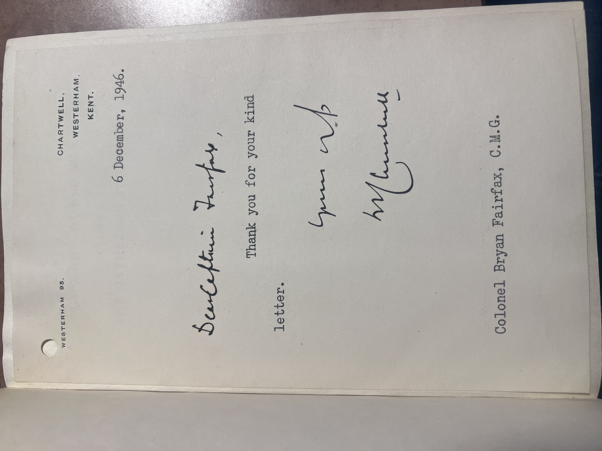
Close photography of the signed insert for visual examination of the artifact rather than transcription alone.
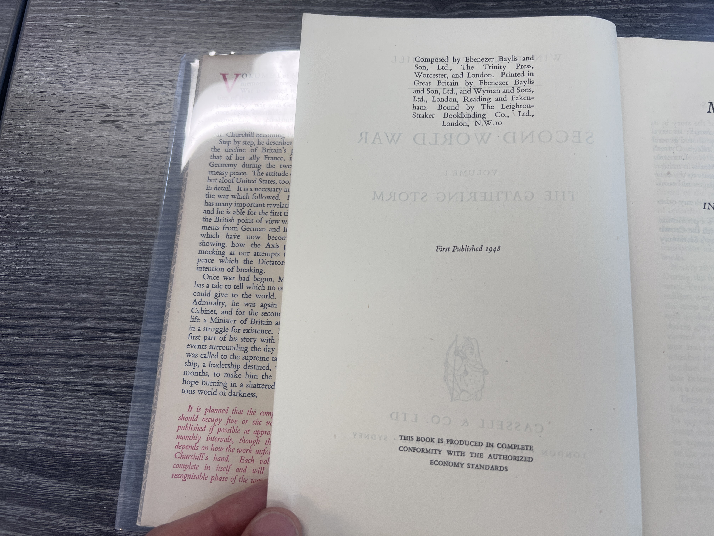
The copyright page records “First Published 1948” and Cassell and Company Ltd., supporting first-edition identification.
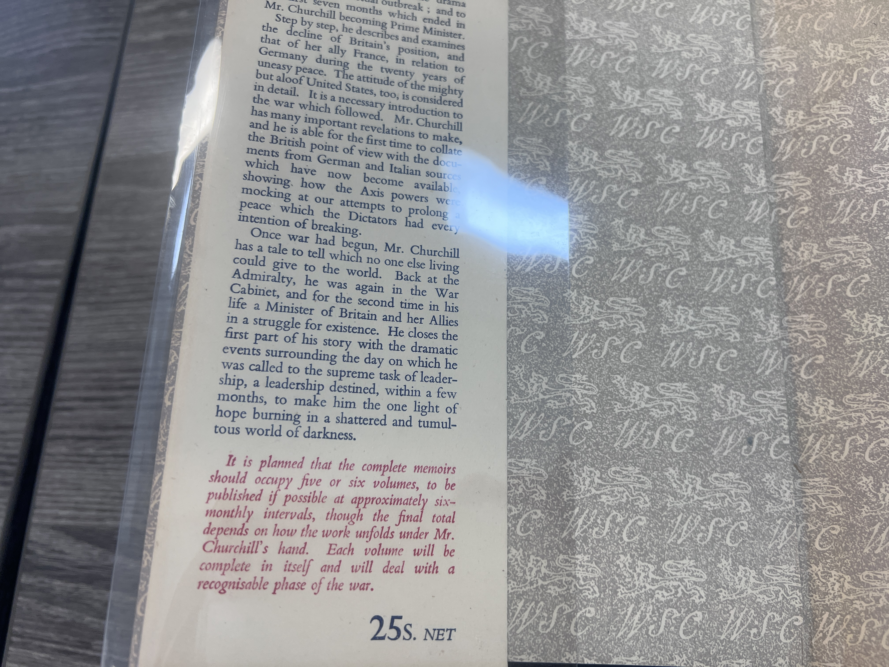
The visible “25s. NET” price is one of the external first-issue indicators documented in the checklist.
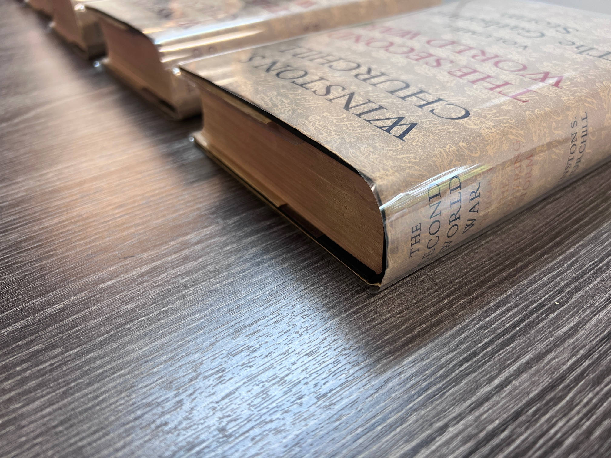
Photographic record of the red top edge, a first-printing feature noted in the checklist.
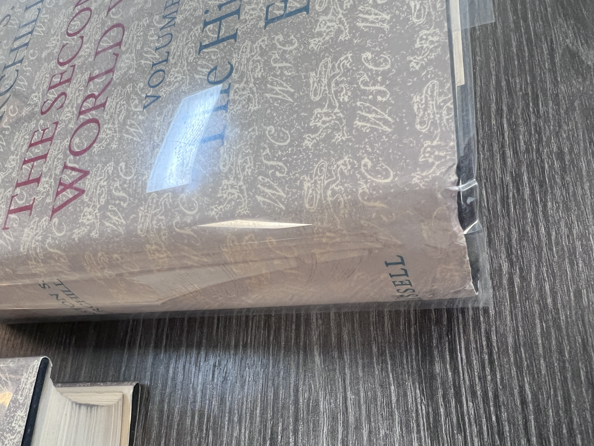
A deliberately plain condition image: the worst edge wear identified in the current photography set.
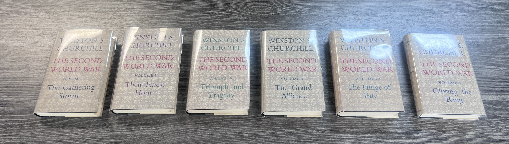
Cassell first edition set with black cloth boards and gilt spine titles, documented with accompanying close-ups.
Churchill replied to Fairfax from Chartwell and thanked him for a “kind letter.”
The original Fairfax letter has not yet been located in this project. The gallery therefore treats the note as a documented exchange, not proof of a broader private friendship.
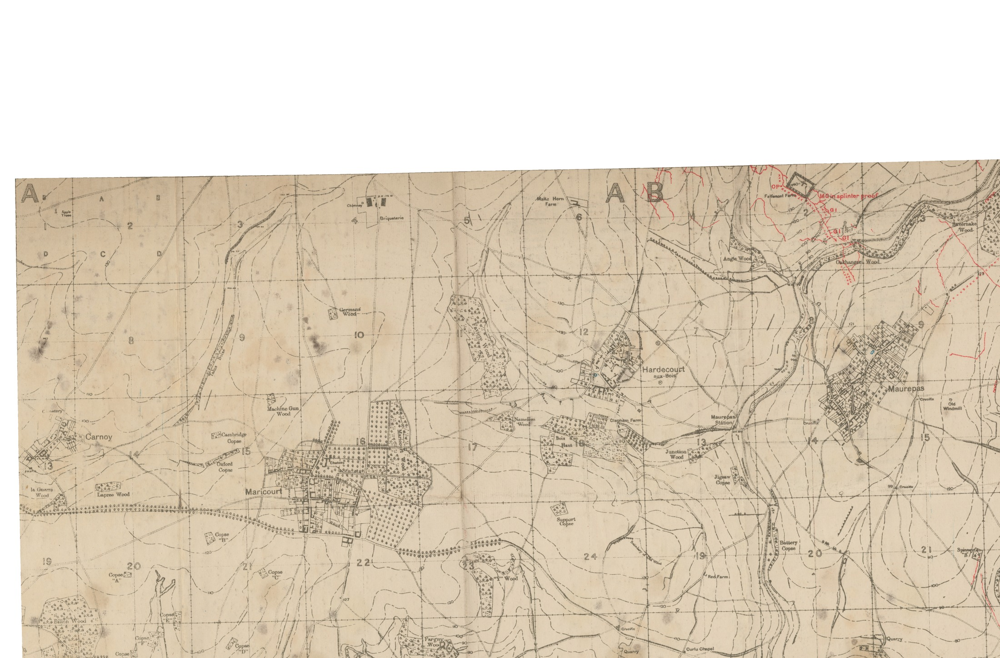
Unannotated source-map overview from NLS tile set 101465287, z17. This gives the documentary map context before any interpretive terrain work.
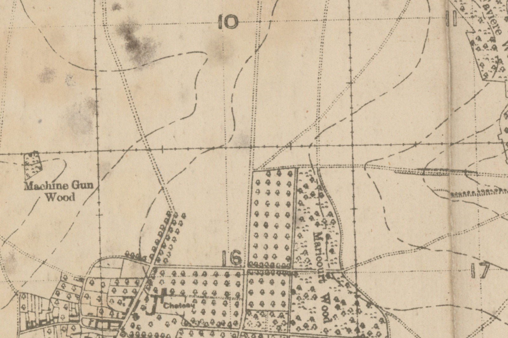
Crop preserving the Maricourt sector around the British/French junction named in the 1 July narrative.
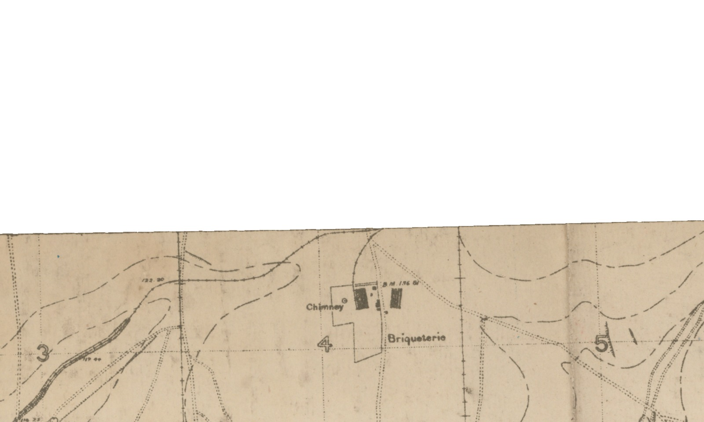
Fixed crop around the Briqueterie objective area described in the 1 July phase.
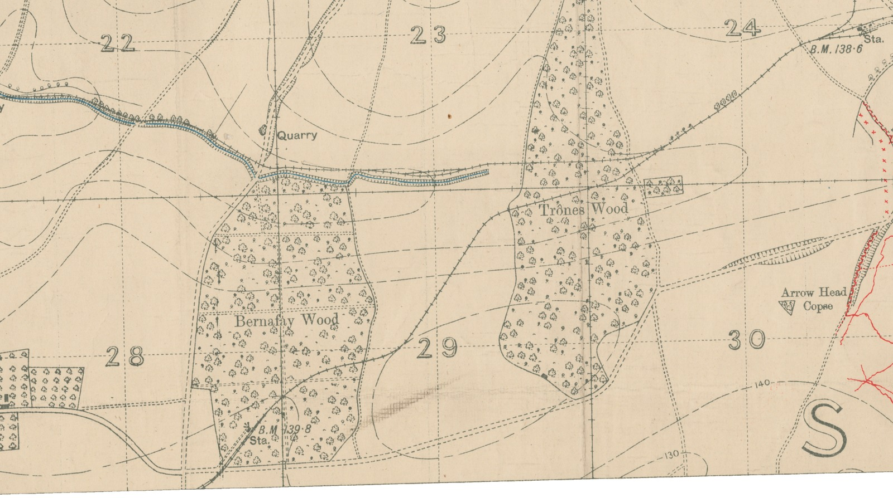
Northern adjacent NLS sheet crop showing the wooded sector for the mid-July fighting.
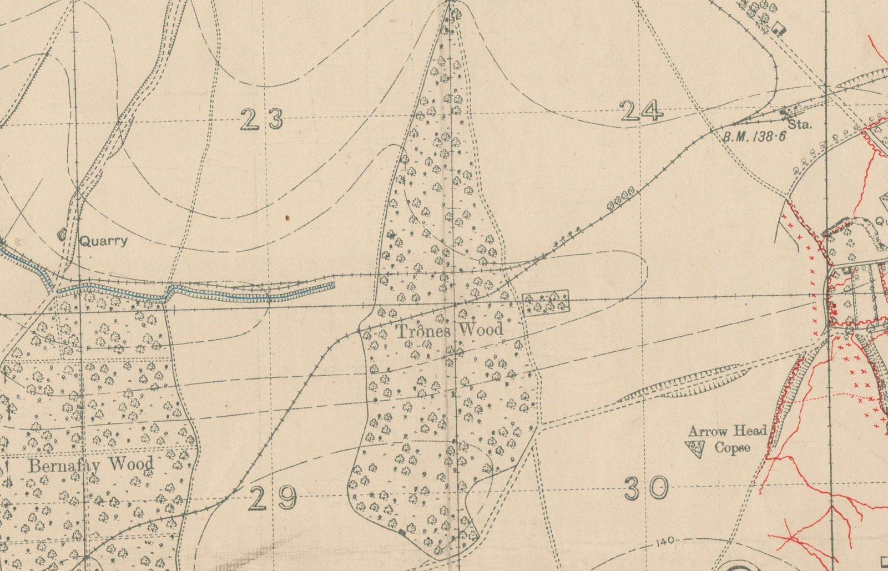
Readable source crop for the passage placing Fairfax in the wood with his men dug in and holding.
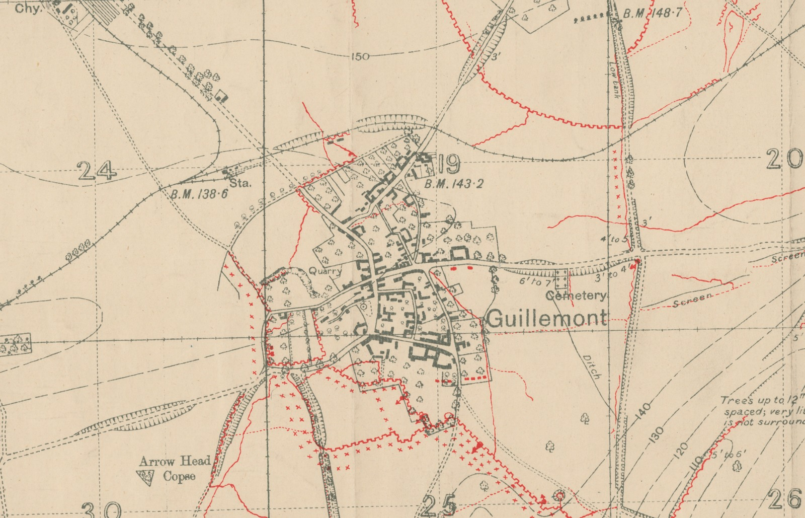
Source crop for the 29–30 July gas, fog, assembly-position, and attack narrative.

Obituary/portrait image used to confirm identity, rank, and decorations within the project ledger.
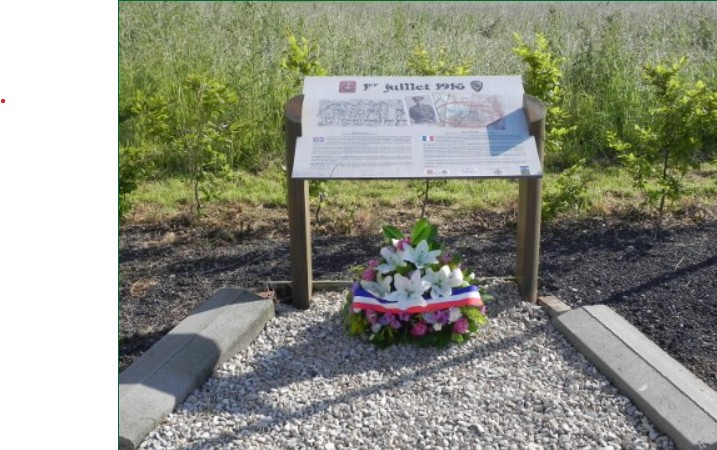
Memorial plaque at Maricourt recording the 1 July 1916 joint Anglo-French attack context.
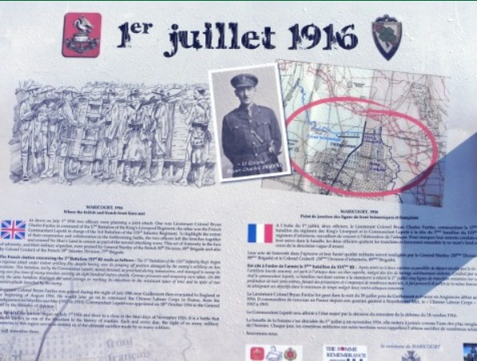
Wider site photograph situating the plaque and memorial at Maricourt.
“leur chef le Colonel Fairfax … ses hautes qualités militaires”
Colonel de Coutard, 11 July 1916, as quoted in Stanley’s 89th Brigade history and ledgered as claim #15.